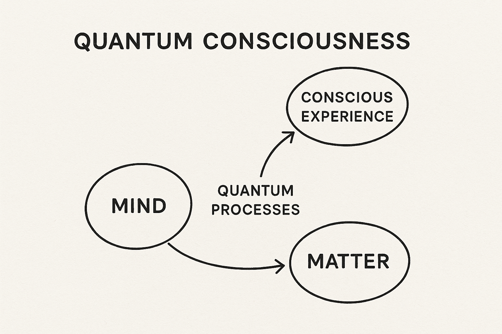

Jumacro Software Services Pvt Ltd architects intelligent ecosystems using AI/ML and IoT technologies. We believe in engineering life-scale intelligence—building solutions that think, adapt, and scale with life itself.
We envision a future where technology resonates with human intuition and ecological balance. Our mission is to merge conscious AI with the real-world needs of people, society, and the planet.
Quantum Consciousness: Exploring the intersection of quantum theory and emotional intelligence. A thought experiment on entangled identities and superposed love.
"Jumacro blends visionary thought with precision execution." – Derya Yinanc
"Our partnership with Jumacro in building the Paynthr platform was a turning point — truly world-class execution." – Chris Marcelli
"Jumacro delivered beyond expectations on the Paynthr OCR system. Mithun is now not just a collaborator but a business partner." – Mike Scharnhost
"Collaborating with Jumacro was seamless and inspiring. Their systems thinking and technical clarity exceeded expectations." – Cagri Yeni, Localghost
"Highly dependable and exceptionally talented – Jumacro delivers clean, scalable AI-first solutions every time." – Cagatay Yeni, Electroop
"Jumacro helped transform our vision into a functional, scalable society automation system and OCR engine for Indian banks." – Dinesh Panchal, Dexbytes Infotech Pvt Ltd
"PinpointMedia Design was proud to work with Jumacro. Their creative edge and technical backbone are unmatched." – Henning Geiler, PinpointMedia Design
Email: mithun@jumacro.com
Phone: +91-9836810493